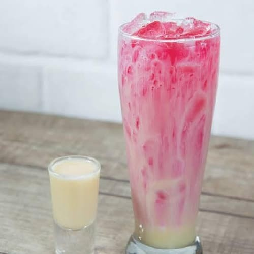

Roughly Translated to Happy Soda
As the title suggests, gembira is an Indonesian word for "happy". The combination of soda water, sweet condensed milk, and coco pandan syrup makes the drink milky and sweet, hence popular among children. The term gembira often comes from the happy reaction of children after drinking this sweet treat, hence the name. Now let's try it yourself and be gembira too!
Ingredients
- 1 can of soda water (330 ml), chilled in fridge
- 1 tablespoon sweetened condensed milk or to taste
- 1 tablespoon coco pandan syrup or to taste
- (Optional) crushed / shaved ice, or ice cubes
Step by Step Directions
- Stir together soda water, sweet condensed milk, and coco pandan syrup in a glass.
- Serve immediately with crushed/shaved ice or ice cubes and enjoy!